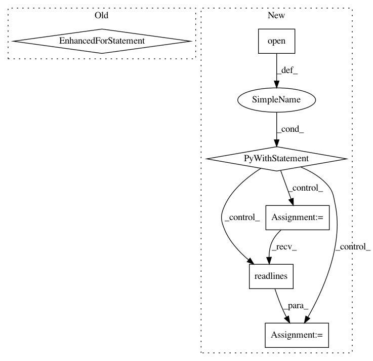

441ba8f82e54a935d16c110fbc61071c3739c6e8,docs/conf.py,,,#,25
Before Change
import mock
MOCK_MODULES = ["torch", "torch.nn", "numpy", "tensorflow", "torchvision"]
for mod_name in MOCK_MODULES:
sys.modules[mod_name] = mock.Mock()
sys.path.insert(0, os.path.abspath(".."))
import torch
torch.__version__ = "1.1"
After Change
sys.path.insert(0, os.path.abspath(".."))
// this gets the memcnn_version without importing memcnn and causing troubles with mock later on
with open(os.path.join(os.path.dirname(__file__), "..", "memcnn", "__init__.py"), "r") as f:
memcnn_version = [line.split(""")[1] for line in f.readlines() if "__version__" in line][0]
// -- General configuration ---------------------------------------------
// If your documentation needs a minimal Sphinx version, state it here.
//
// needs_sphinx = "1.0"
// Add any Sphinx extension module names here, as strings. They can be
// extensions coming with Sphinx (named "sphinx.ext.*") or your custom ones.
extensions = ["sphinx.ext.autodoc", "sphinx.ext.viewcode", "sphinx.ext.mathjax",
"sphinx.ext.napoleon", "sphinx.ext.intersphinx"]
// Add any paths that contain templates here, relative to this directory.
In pattern: SUPERPATTERN
Frequency: 3
Non-data size: 6
Instances
Project Name: silvandeleemput/memcnn
Commit Name: 441ba8f82e54a935d16c110fbc61071c3739c6e8
Time: 2019-07-09
Author: silvandeleemput@gmail.com
File Name: docs/conf.py
Class Name:
Method Name:
Project Name: pytorch/examples
Commit Name: 7b205efea6b504de04311bc55d109cd28d8f3e0c
Time: 2016-12-21
Author: alerer@fb.com
File Name: OpenNMT/preprocess.py
Class Name:
Method Name: makeVocabulary
Project Name: GoogleCloudPlatform/PerfKitBenchmarker
Commit Name: c4289c6035f95f6e3964273ebf43dd1788a25a9a
Time: 2016-04-20
Author: skschneider@users.noreply.github.com
File Name: perfkitbenchmarker/requirements.py
Class Name:
Method Name: _CheckRequirements